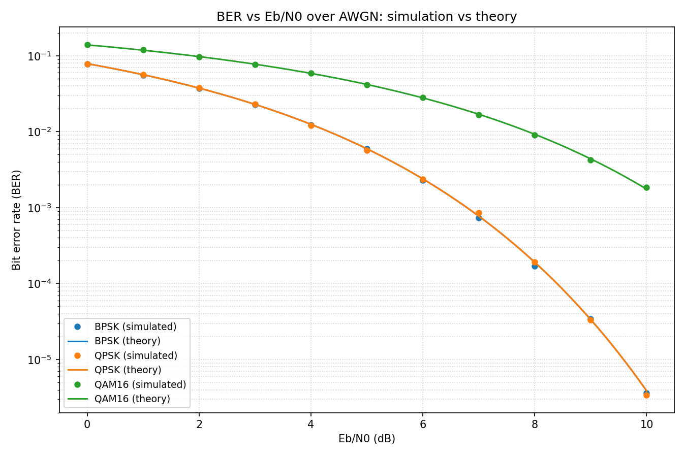
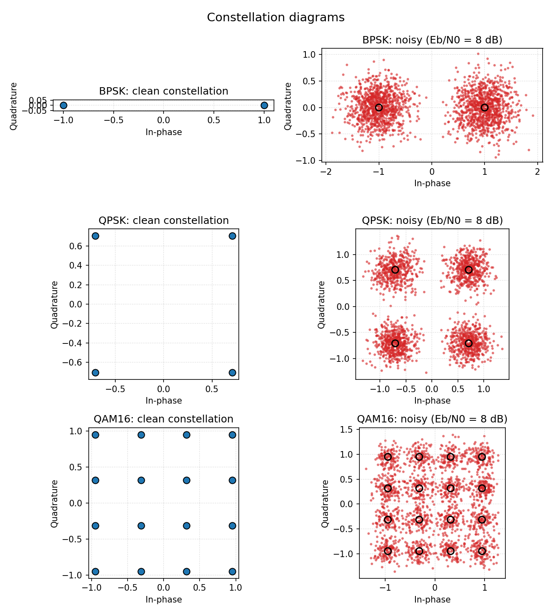

Business websites
Responsive sites with clear information architecture, focused messaging, and a straightforward path to contact.
01 / PROFILE
I bring a systems mindset to growth: clear measurement, practical execution, and an engineer’s habit of tracing every outcome back to its cause.
02 / FEATURED PROJECT
A reproducible Monte Carlo model of a complete baseband link: seeded bit generation, Gray-coded modulation, AWGN transmission, hard-decision detection, and BER analysis against textbook theory.


Gray-coded QPSK overlays BPSK at the bit level, while 16-QAM needs roughly 4 dB more Eb/N0 for the same BER in exchange for four bits per symbol.
Python, NumPy, SciPy and Matplotlib, organized as separate source modules for bit generation, modulation, channel behavior, theory, simulation and plotting.
03 / WEB DEVELOPMENT
I build the pages, stores, and follow-up systems that turn traffic into enquiries and orders, with the marketing journey considered from the first wireframe.
Responsive sites with clear information architecture, focused messaging, and a straightforward path to contact.
Store structure, product and offer pages, conversion flows, and the practical details needed to start selling.
Campaign pages aligned with the ad promise, built around one audience, one offer, and one measurable action.
GoHighLevel pipelines, forms, lead routing, and follow-up workflows that connect acquisition with sales.
WORKING STACK
SELECTED WORK
Regional commerce deployments across blumora.pk, bloomora.pk, and coscart.pk, covering storefront structure, product and offer pages, responsive conversion flows, platform deployment, and domain/DNS configuration.
A responsive multi-track portfolio that organizes engineering, marketing, academic, and web-development work into one clear professional home.
Share the offer, audience, and current setup. I’ll map the most useful build.
04 / PORTFOLIOS
Choose the discipline closest to the work you need.
Communication systems, IoT, and networks — research engineering at CISNR and hands-on optical fiber work.
Open portfolio B / MARKETINGMeta ads, media buying, and ecommerce growth — 50 completed jobs, 100% Job Success Score, real 5.0 client reviews.
Open portfolio C / WEB DEVELOPMENTBusiness websites, ecommerce stores, campaign landing pages, and CRM-backed lead funnels.
View services & work D / ACADEMICResearch, credentials, and scholarships — education, research engineering, and documents on file.
Open portfolio